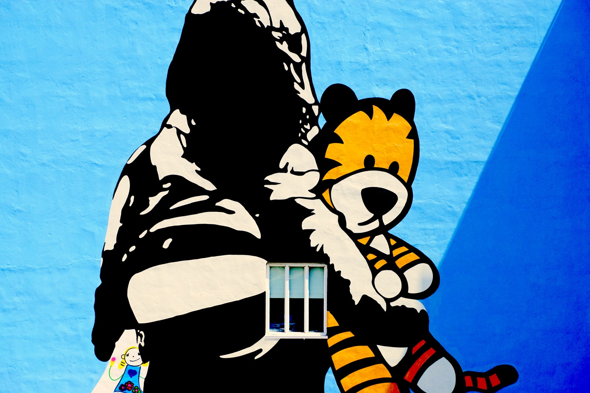
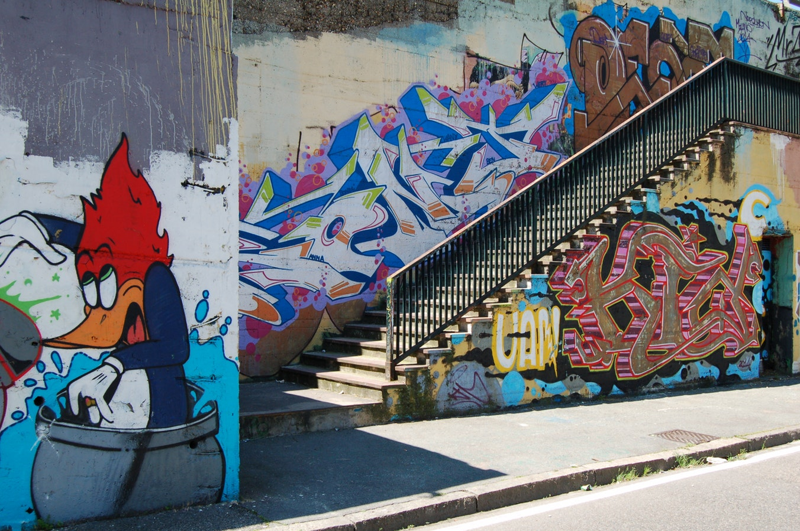
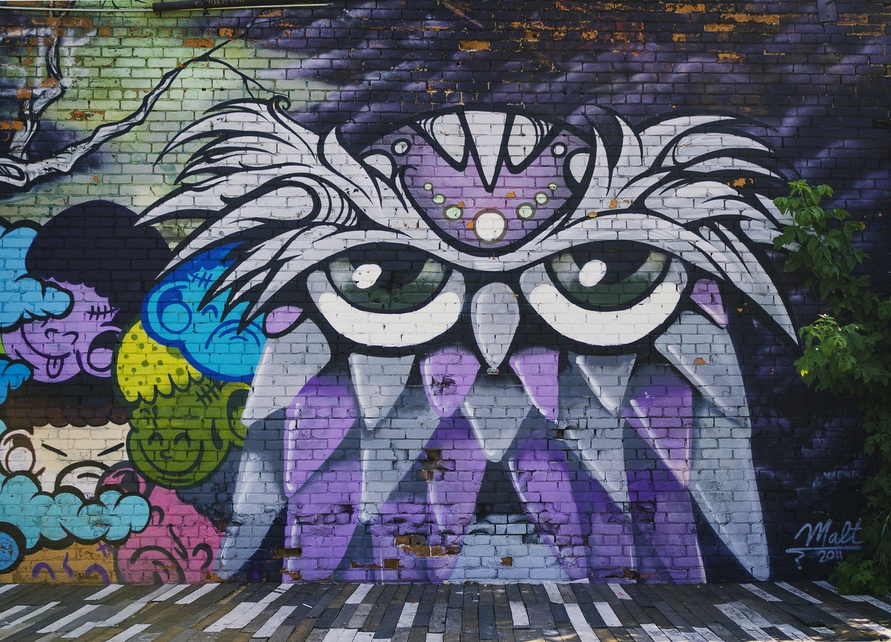

Hobbes, named for philosopher Thomas Hobbes, is the deuteragonist of the comics.He is Calvin's stuffed tiger and best friend, who, from Calvin's perspective, is a live tiger and real as anyone else in the strip.
Woody Woodpecker is a fictional animated character anthropomorphic woodpecker who appeared in theatrical short films produced by the Walter Lantz Studio and distributed by Universal Pictures during the golden age of American animation. 
Brazilian street artist Luis Seven Martins successfully blends roughness and elegance in his Graffiti Birds urban paintings on the walls of Sao Paulo, Brazil. Martins goes by the nickname.